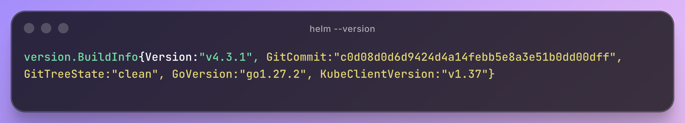
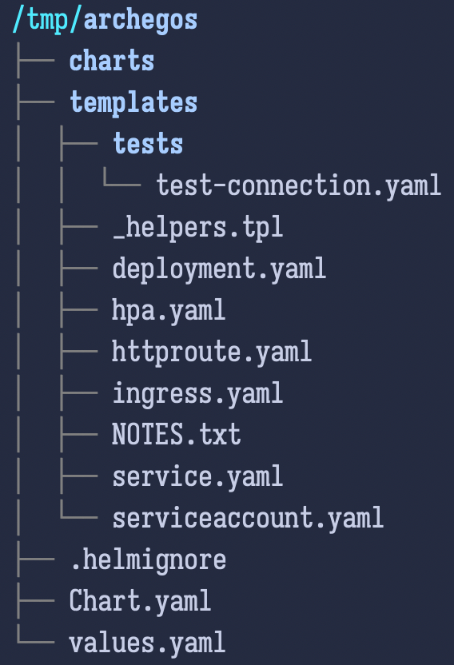

Helm
Helm is the package manager for Kubernetes, the popular open source orchestration platform. Generally speaking, package managers help us integrating third-party or libraries easily into our codebase. Package managers like Helm therefore enable us to install and start using the software quickly without needing to figure out how to make it run or run well on the platform, since it has already been packaged up in an easy-to-use manner.
Introducing Helm
Helm is a package manager for Kubernetes. That is the way the Helm developers have describe Helm since the very first commits to the Git repository.
Distributed locking, storage and caching became mainstream problems instead of points to academic interest.
To install Helm, my preferred solution is referring to release page of Helm on GitHub then download the appropriate release. Next, extract the file to /usr/local/bin. Finally, make the helm binary executable using sudo chmod +x /usr/local/bin/helm. I always use the preceeding commands to make Helm up and running on my machine, though for installation please refer to Helm installation documentation.
curl -C- -L https://get.helm.sh/helm-v4.3.1-linux-arm64.tar.gz -o /tmp/helm-v4.3.1-linux-arm64.tar.gz
sudo tar --gzip --extract --verbose --file /tmp/helm-v4.3.1-linux-arm64.tar.gz --directory /usr/local/bin linux-arm64/helm --strip-components 1
sudo chmod +x /usr/local/bin/helm
helm --version| Flag | Description | short |
|---|---|---|
|
Specifies |
|
|
Extracts our files |
|
|
Prints logs of the process |
|
|
Path to extract file |
|
|
Strips n leading components from the file |
✖️ |

After the successful installation of Helm on our local machine, we can check for the version of Helm using helm --version; see Helm version.
Create a Chart
To start our journey on Helm, we start by creating our chart using Helm command line. The create command generates a chart with the structure and files. The provided files are well-documented so we can use that to learn more about chart and how we can accomplish more. The generated directory, also, contains the templates to showcase multiple {k8s} manifests working together to deploy an application. One great thing about the generated chart is that the right way we can use helm install to deploy our chart.
helm create /tmp/archegos
exa --tree --group-directories --ignore-git /tmp/archegos # List the generated chart directoryIn the previous command we generated our first Helm chart named archegos [1]. The Listing Helm chart displays the content of created chart.

At this step, we just need to work with a few of those files then we gradually work on other files and directories when we deepen our knowledge related to Helm.
| Type | Filename | Description |
|---|---|---|
File |
|
Includes metadata and some functionality controls the chart. |
Directory |
|
{k8s} manifests are stored inside |
File |
|
After a successful chart installation the file is rendered to display the final message. |
File |
|
Holds values passed to templates. It can be overridden during the installation. |
Containers and Microservices
At the very heart of cloud native computing is this philosophical perspective that smaller discreate standalone services are preferable to large monolithic services that do everything.
The cloud native approach is to write a series of smaller services, each relatively special purpose, and then join these services together to serve a higher-level purpose.
representational state transfer (REST) API
JavaScript Object Notation (JSON) over HTTP
Microservices
Imagine an ecommerce website. We can think of several tasks that jointly comprise this sort of website. There is a product catalog, user accounts and shopping cars, a payment processor that handles the security-sensitive process of montary transactions, and a fronted through which customers view items and select their purchases. There is also an administrative interface where the store owners manage inventory and fulfill orders.
Taken to an extreme, an application is broken down into its smallest constituent parts, and each part is a program. This is the microservice architecture. Standing at the opposite end of the spectrum of a monolithic application, a microservice is responsible for handling only one small part of the overall application’s processing.
Containers
It is common to compare and contrast a container and a virtual machine. A virtual machine runs an entire operating system in an isolated environment on a host machine. A container, in contrast, has its own filesystem, but is executed in the same operating system kernel as the host.
Containers and microservices are, by design, a perfect match.
Small discrete programs can be packages, along with all their dependencies, into svelte (slender, slim) containers.
We want to inject tidbits of configuration into the container based on our present needs.
Container technology is a sophisticated and fascinating space in its own right.The registry manages the layers.An image name can range from simple to complex.The tag typically refers to the version of software installed (v1.2.3), through tags are really just arbitrary strings.
There is no guarantee that at any given time a tag refers to exactly a specific version of the software.
Registries support fetching images by digest, which is SHA-256 or SHA-512 digest of the image’s layer information.
The canonical format for combining is name:tag@digest, where only name is required.
How do we best execute lots of containers? How do we best facilitate a microservice architecture where lots of containers need to work together? How do we judiciously share access to things like network attached storage, load balancers, and gateways? How do we manage injecting configuration infromation into lots of containers? And perhaps most importantly, how do we manage resources like memory, CPU, network bandwidth, and storage space?
How one might manage distributing containers across multiple hosts, spreading the load equitably while still judiciously using resources? Or, more simply, how do we run the fewest possible hosts while running as many containers as we need?
Mesos introduced Maratho; Docker created Swarm; Hashcorp released Nomad; and Google created an open source sibling to its internal Borg platform, and named this technology Kubernetes (the Greek word for a ship’s captain).
Kubernetes introduced two concepts that set it apart from the crowd: declarative infrastructure and reconciliation loop.
Kubernetes' design is that we think declaratively. we tell the scheduler (Kubernetes) what our desired state is, and Kubernetes takes care of converting that declarative statement into its own internal procedures.
"I want this container running on this port whith this amount of CPU and some storage mounted at this location on the filesystem." Kubernetes works behind the scenes to wire everything up according to our declaration of what we want.
Kubernetes introduces a higher-level abstraction called a Pod. A pod is an abstract envelop that describe a discrete unit of work. A pod descibes not just a container, but one or more containers (as well as their configuration and requirements) that together perform one unit of work:
apiVersion: v1
kind: Pod
metadata:
name: sample
namespace: helm
spec:
containers:
- image: "nginx:latest"
name: sample-nginxMore frequently, a pod only has one container. But sometimes they have containers that do some preconfiguration for the main container comes online. These are called init containers. Other times, there are containers that run alongside the main container and provide auxiliary services. These are called sidecar containers. These are all considered part of the same pod.
When expresses as YAML or JSON, are referred to as manifests. A manifest can contain one or more Kubernetes resources (also called objects or resource definitions).
Configuration information in Kubernetes may be stored in ConfigMaps or, for sensitive information, Secrets. And the Pod’s definition may then relate those ConfigMaps and Secrets to environment variables or files within each container.
A Secret is structurally similar to a ConfigMap, except that the values in the data section must be Base64 encoded. Pods are linked to configuration objects (like ConfigMap or Secret) using volumes.
apiVersion: v1
kind: ConfigMap
metadata:
name: sample-configuration-data
data:
backgroundColor: blue
title: Learning Helm
---
apiVersion: v1
kind: Pod
metadata:
name: sample
namespace: helm
spec:
volumrd:
- name: sample-configuration
configMap:
name: sample-configuration-data
containers:
- image: "nginx:latest"
name: sample-nginx
env:
- name: BACKGROUND_COLOR
valueFrom:
configMapKeyRef:
name: sample-configuration-data
key: backgroundColorA Pod is the "primitive" description of a runnable unit of work, with containers as part of that pod. But Kubernetes introduces higher-order concepts.
A Deployment describes as application as a collection of identical pods. The Deployment is composed of some top-level configuration data as well as a template for how to construct a replica pod.
We can attach a HorizontalPodAutoscaler (another Kubernetes resource type) and configure that to scale our pod bsae on resource usage.
apiVersion: apps/v1
kind: Deployment
metadata:
name: sample-deployment
labels:
app: sample-deployment
spec:
replicas: 3
selector:
matchLabels:
app: sample-deployment
template:
metadata:
labels:
app: sample-deployment
spec:
containers:
- image: "nginx:latest"
name: sample-deployment-nginxWhen it comes to attaching a Kubernetes application to other things on the network, Kubernetes proves Service definition. Service is a persistent network resource (sort of like a static IP) that persists even if the pod or pods attached to it go away.
apiVersion: v1
kind: Service
metadata:
name: sample-service
spec:
selector:
app: sample-deployment
ports:
- protocol: TCP
port: 80
targetPort: 8080While a Service is an abstract Kubernetes concept, behind the scenes it may be implemented as anything from a routing rule to an external load balancer.
At the very core of Helm is this idea that all of those object can be packaged to be installed, updated, and deleted together. When we wrote Helm, we had three main goals: . Make it easy to go from "zero to Kubernetes" . Provide a package management system like operating systems have . Emphasize security and configurability for deploying applications to Kubernetes
In our view, a new Helm user with an existing Kubernetes cluster should be able to go from download to an installed application in five minutes or less.
We initially modeled Helm after Homebrew (a package manager for macOS) and APT (the package manager for Debian). But as Helm as matured, we have sought to learn from as many different package managers as we can.
Another notion that is rare in typical operating systems, but is central to Kubernetes, is the idea of a namespace. In Kubernetes, a namespace is an arbitrary grouping mechanism that defines a boundary between the things inside the namespace and the things outside.
Let’s use a chart to learn about a variety of Helm chart-related scenarios. In this section, we try to deploy a WordPress application.
Chapter 3
What happens to Secret when we uninstall a chart?
By default, Helm tracks up to 10 revisions of each installation. Once an installation exceeds the allowed maximum release records, it removes exceeding ones. Each release record, a Helm Secret inside our cluster, contains required information to re-create the {k8s} objects for that revision; it contains metadata information about the relevant release.
apiVersion: v1
kind: Secret
data:
release:
metadata:
creationTimestamp: ""
labels:
... Fill it- The lifecycle of a release can display different statuses
| Status | Description |
|---|---|
pending-install |
A release marked version 1 until it sends to {k8s} by Helm. |
deployed |
As soon as our manifest accepts to the {k8s} cluster, Helm updates record and marking it as deployed. |
pending-upgrade |
When we send a Helm upgrade request, a new release is created for the installation. |
superseded |
When the last deployed is updated successfully, its release changes ti superseded and the new version hold deployed status. |
pending-rollback |
A rollback is created, a new release record is created then its status change to prnding-rollback waiting for {k8s} accepts the release manifest. Then its status updated to deployed and the last release is marked as superseded. |
uninstalling |
When a Helm uninstalling command executes, the most latest release marked as uninstalling. |
uninstalled |
When the uninstall command is successful and the history is preserved the recent release’s status reads uninstalled. |
failed |
Helm marks a release as failed as soon as {k8s} rejects the submitted manifest. |
| Every Helm manifest submits to the {k8s} cluster incremented the revision by 1, even the failed releases increments the revision. |
| Command | Description | |
|---|---|---|
|
Prints the release note of a successful operation |
|
|
Displays the recent values used during the installation |
|
|
Prints the default values of a chart name |
|
|
Returns the manifest generated from the template |
|
|
||
|
||
|
||
|
Helm generates a name with a combination of the chart name and a timestamp; |
|
helm upgrade has a flag --install that at first upgrade command tries to update a release if the release (provided name in the namespace) doesn’t exist it installs the release. The --install flag in someways are dangerous since there is no checking mechanism in Helm to assure the provided name belongs to the release intended to be updated.
As soon as {k8s} API server accepts the manifests, Helm marks a release as successful, although many issues could happen on the {k8s} side. For example, busy nodes, a slow scheduler, slow or failed image pulls, and outright failure of a container to start. Since chart benefits the usage of different resources, for example, DaemonSets, Deployments, and StatefulSets all create Pods. --wait flag improves the installation process by adding one more step required from {k8s} API Server, all of the Pods created by the chart has Running state before timeout expires. It is a good strategy to use a longer timeout (more than 5 minutes) especially when CI is using the chart. Adding a longer --timeout prevents the earlier failure on different reasons such as network latency, image pull failure, and so on. --atomic flag improves --wait command not only it replicates --wait flag feature but also when an installation fails it performs an automatic rollback to the last successful release.
It’s an advised strategy to use longer --timeout, especially when using in CI. Since, both --wait and --atomic flags can be a source of failure for transitive reasons that may be resolved by {k8s} itself.
|
By default, {k8s} Deployment restarts Pods when certain fields are updated, though, sometimes we require to recreate Pods to do so we can use --force flag. --force flag enforces {k8s} API Server to recreate Pods by removing the existing ones so it causes downtime.
Helm core maintainers advised against using --force flag in CI pipelines in deploy productions.
|
Failing Helm installation requests have the risk of unused objects hanging around so --cleanup-on-fail flag removes every object that was newly created during the installation. Although it keeps our deployment tidy and clean, it makes debuging a little harder.